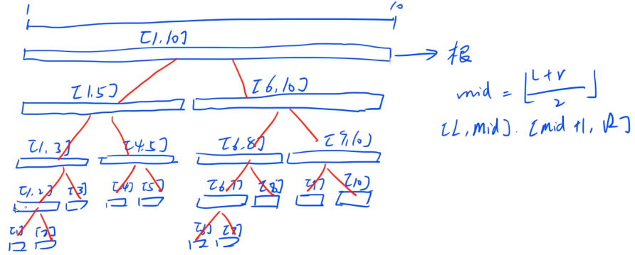
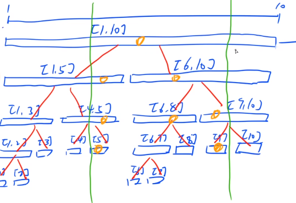
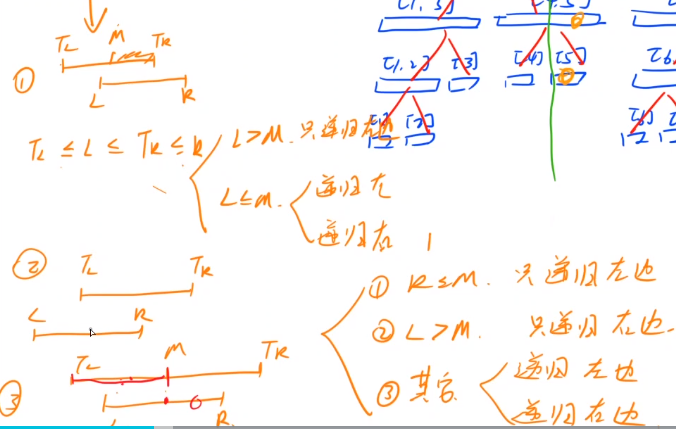

线段树
总括

空间：倒数第二层最多有 n 个点，因此它和它上面的所有节点最多有 2n - 1 个，最后一层最坏情况下是倒数第二层的两倍 2n，空间开 4n 足够
结构体
- 左端点与右端点
- 属性
- 辅助属性（父节点属性要能从左右子节点算出）
函数
build：将一段区间初始化为线段树一般在
build完左右儿子之后进行pushup操作pushup：子节点算父节点信息query：假设查询区间为 $[L, R]$，当前区间为 $[T_L, T_R]$- $[L, R] \supseteq [T_L, T_R]$：直接返回
- $[L, R] \cap [T_L, T_R] \ne \emptyset$：分左右两边递归
- $[L, R] \cap [T_L, T_R] = \emptyset$：不存在这种情况

总共访问的区间数在 $o(logn)$ 内

情况1：两边不同时取等，如果同时取等，则转变为直接返回的情况
只会出现一些长度为1的分叉，不影响数量级
情况3：虽然会分裂，但最多只会分裂一次，不会分裂多次
对于整棵树，最多只有两条链（情况3），递归左边和右边（情况1）有两个点，最多有 $4logn$ 的点数（常数比较大，树状数组是 $logn$）
modify：修改- 单点
pushup即可 - 区间
pushdown（懒标记）：父节点信息下传到子节点
- 单点
简单应用
1275. 最大数 （区间查询，单点修改）（动态）
每个数在同一个范围内，从空序列起不断添加一个数，每次询问序列最后 L 个数中的最大数
问题转化为：先将坑填好，然后每次修改一个数，询问最大数
1 | struct Node{ |
只有 build 是 l 与 r 操作，query 和 modify 用的是 u 里的 l 与 r
build 初始化 l 与 r 时容易写漏！
245. 你能回答这些问题吗 （区间查询，单点修改，辅助属性）
查询区间内部最大子段和
最大连续子段和
- 横跨左右子区间的最大子段和，左最大，右最大
- 左子区间的最大后缀 + 右子区间的最大前缀
- 最大前缀（后缀）维护：区间和
- 左子区间的最大后缀 + 右子区间的最大前缀
加到具有完备性为止
1 | struct Node |
246. 区间最大公约数 （区间查询，区间修改转化为单点）
操作1：区间 $[L, R]$ 同时增加一个数
操作2：求区间内最大公约数
只增加，不赋值，可以用差分转化为单点修改
只修改一个数后再求公约数简单，同时修改一个区间后再求公约数困难
$gcd(a1,a_2,…a_n) = gcd(a_1, a_2 - a_1, … a_n - a{n - 1})$
证明：设左边值为 d，显然 d 能整除右边每一项；设右边值为 d，有 $d | a_1$，$d|a_2 - a_1$，则 $d|a_1 + a_2 - a_1$，即$d|a_2$，其他项类似
由这个性质，线段树只用维护差分的值 $gcd[L, R] = gcd(a[L], gcd(b[L + 1, R]))$，维护
gcd和sum即可
代码基本同上题，注意主函数里差分可能会用到 +1 位置，特殊地方需要判断
1 | void pushup(Node &u, Node &l, Node &r){ |